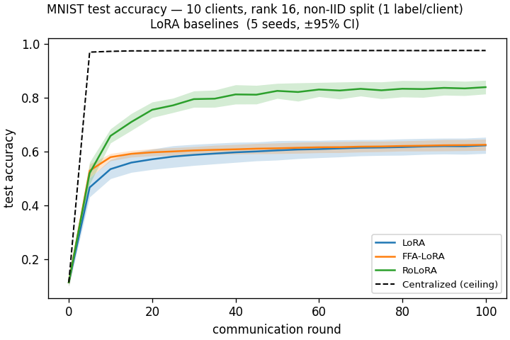
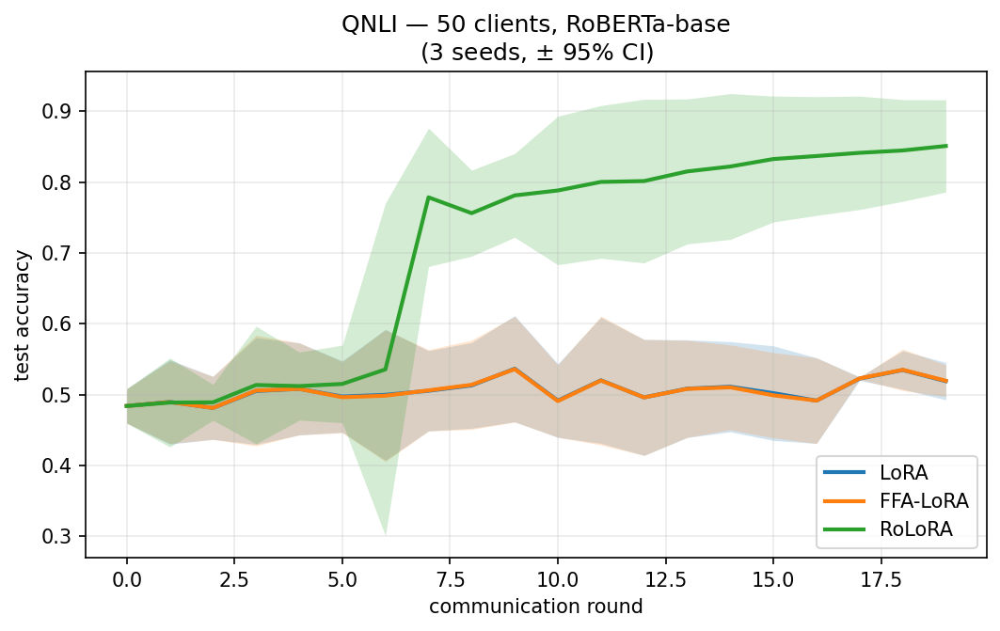
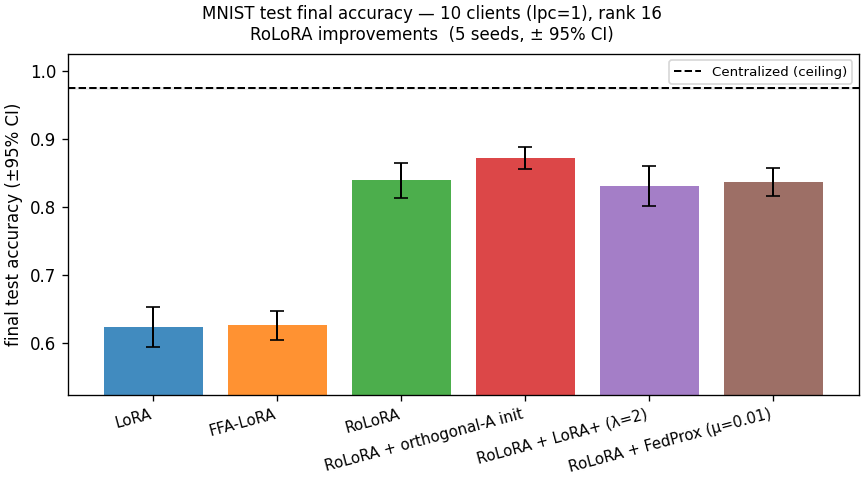
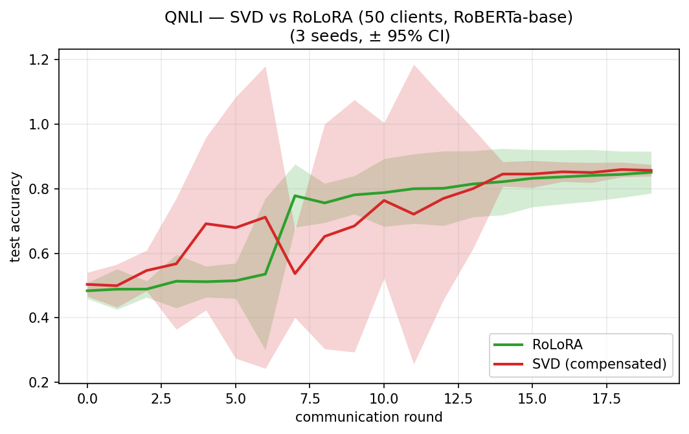

Alternating optimization of LoRA for robust federated fine-tuning
| MNIST toy model | Language-model proxy | |
|---|---|---|
| Model | \(\mathrm{ReLU}(xAB)\,W_{\mathrm{out}}\) | RoBERTa-base, 125M |
| Dataset | MNIST | QNLI |
| Clients | 10 | 50 |
| LoRA rank | 16 | 4 |
| Heterogeneity | IID & one label / client | Many-client partition |
| Training | 5 local epochs, batch 64 | 20 communication rounds |
| Repetitions | 5 seeds | 3 seeds (main variants) |
| Implementation | Our reimplementation | Authors' released code |




a100-small.| Method | \(A\) updated? | \(B\) updated? | Exact aggregation? | Main weakness |
|---|---|---|---|---|
| FedAvg-LoRA | Every round | Every round | No | Cross-client interference |
| FFA-LoRA | Never | Every round | Yes | Fixed random basis |
| RoLoRA | Alternate rounds | Alternate rounds | Yes | Half the adapter moves / round |
| Original study | Our proxy |
|---|---|
| RoBERTa-large, 355M | RoBERTa-base, 125M |
| Five GLUE tasks | QNLI only |
| Multiple client counts | 50 clients |
| 30 communication rounds | 20 communication rounds |
| Eight learning rates | Three learning rates |
| Full experimental grid | Trend reproduction |
| Initialization | Schedule | Status |
|---|---|---|
| Default | AB | Completed |
| Orthogonal | AB | Needed at identical LM scale |
| Default | BBA | Not run in LM proxy |
| Orthogonal | BBA | Completed, three seeds |